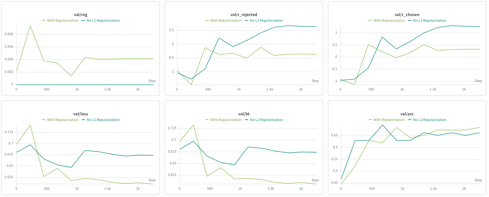

Bradley-Terry RM warmed from the SFT checkpoint · Llama-3.2-1B · Tulu-3 preference mixture · MPS (M5 Pro, 48GB)
Ablation: reward-L2 = 1e-3 vs no regularization (1e-3 → 0)
r ≈ +0.6 to +1.3) — the unbounded scale that would later swamp PPO's KL penalty.
Conclusion: ship l2_reg=1e-3 for the RM that feeds PPO.
The six logged validation panels for both runs, straight from Weights & Biases. Everything below this is read off these curves. Note the wandb colors are the inverse of the hand-drawn charts further down: here "With Regularization" (l2_reg = 1e-3) is light green and "No L2 Regularization" (l2_reg = 0) is teal.

val/r_rejected, val/r_chosen, val/reg:
the no-reg rewards climb steadily onto a positive pedestal while the
reg rewards flatten near 0; val/reg is flat-zero for no-reg (penalty off)
and bounded for reg. Bottom row — val/loss, val/bt, val/acc:
the reg loss/BT descend lower and keep falling, the no-reg
loss/BT bottom out near step 500 and drift back up; val/acc tracks together in the same ~0.66–0.68 band.
| Backbone | meta-llama/Llama-3.2-1B, weights warmed from our SFT checkpoint (checkpoints/sft/checkpoint_epoch0.pt); LM head dropped, fresh scalar score head added (score.weight randomly initialized — see load report below) |
|---|---|
| Data | allenai/llama-3.1-tulu-3-8b-preference-mixture — pairwise (chosen, rejected); filter_small keeps pairs where both sides fit; capped at max_examples = 20,000, max_length 256, batch 4 → 2,239 train steps |
| Loss | Bradley-Terry: BCEWithLogits(r_chosen − r_rejected, target=1) + l2_reg · mean(r_chosen² + r_rejected²) |
| Optim | AdamW, lr 1e-5, cosine schedule (3% warmup), grad-clip 1.0, bf16, 1 epoch |
| Pad token | <|finetune_right_pad_id|> (id 128004) so pad_id ≠ eos_id → last-token pooling is unambiguous |
| Metrics | val + fixed-pair "peek" every ~10% of the epoch, plus a step-0 baseline of the untrained RM |
| wandb | reg: run "With Regularization" · no-reg: run "No L2 Regularization" (project llm-from-scratch-rm-trainer) |
LlamaForSequenceClassification LOAD REPORT from: meta-llama/Llama-3.2-1B score.weight | MISSING (newly initialized) SFT Model Loaded into RM classification head. New additions - ['score.weight'], dropped - ['lm_head.weight']
Expected: the SFT backbone loads cleanly; only the brand-new scalar reward head is randomly initialized. That's why the step-0 baseline below sits at chance.
The question: can a scalar head bolted onto the SFT backbone learn to score a human-preferred answer above a
rejected one? The success signals are preference accuracy (fraction of val pairs where
r_chosen > r_rejected; chance = 0.5) and the peeks (do fixed pairs flip to ✓ with
a widening margin?). Numbers below are the shipped reg = 1e-3 run; the
no-reg run reaches the same band (it's the subject of Part 2).
| Run | val acc @ step 0 | final val acc | final val BT loss | final val margin (r_c − r_r) |
|---|---|---|---|---|
| reg = 1e-3 (shipped) | 0.446 | 0.685 | 0.607 | 0.69 |
| no-reg = 0 | 0.467 | 0.663 | 0.674 | 0.63 |
Accuracy goes from below chance at step 0 (0.45 — the untrained random score head,
our honest "before") to ≈ 0.68. For a 1B model on a 20K-pair subset trained 1 epoch, that's
healthy, not weak: human annotators only agree with each other ~65–75% of the time, so ~0.68 is
near the realistic ceiling — the RM has learned about as much signal as the labels contain. (Both runs land in the
same band; that's the point of Part 2.)
reg = 1e-3 no-reg = 0 · both converge to the same band; step 0 starts below chance (random head).
Three fixed (prompt, chosen, rejected) triples are scored at every eval; the signal is the margin (chosen pulled above rejected, verdict ✓) widening over training. The three pairs (full text, shared with Part 2):
| Prompt | chosen (intended-better) | rejected |
|---|---|---|
| What is the capital of France? | The capital of France is Paris. | I think it might be Lyon or somewhere in Germany, not totally sure. |
| Write a haiku about the ocean. | Endless blue expanse / waves whisper to the pale shore / gulls trace the salt wind | The ocean is big and has water and fish and it is very deep and blue ok. |
| Explain why the sky is blue. | Sunlight scatters off air molecules, and shorter blue wavelengths scatter most (Rayleigh scattering), so the sky looks blue. | The sky is blue because it reflects the ocean which is also blue. |
Peek 1: [What is the capital of France?] margin=−0.191 ✗ chosen r=−0.891 | The capital of France is Paris. rejected r=−0.699 | I think it might be Lyon or somewhere in Germany, not totally sure. Peek 2: [Write a haiku about the ocean.] margin=−0.008 ✗ chosen r=−0.467 | Endless blue expanse / waves whisper to the pale shore / gulls trace t rejected r=−0.459 | The ocean is big and has water and fish and it is very deep and blue o Peek 3: [Explain why the sky is blue.] margin=+0.086 ✓ chosen r=−0.283 | Sunlight scatters off air molecules, and shorter blue wavelengths scat rejected r=−0.369 | The sky is blue because it reflects the ocean which is also blue.
Peek 1: [What is the capital of France?] margin=+1.859 ✓ chosen r=+0.469 | The capital of France is Paris. rejected r=−1.391 | I think it might be Lyon or somewhere in Germany, not totally sure. Peek 2: [Write a haiku about the ocean.] margin=+1.561 ✓ chosen r=+1.070 | Endless blue expanse / waves whisper to the pale shore / gulls trace t rejected r=−0.490 | The ocean is big and has water and fish and it is very deep and blue o Peek 3: [Explain why the sky is blue.] margin=+0.903 ✓ chosen r=+0.012 | Sunlight scatters off air molecules, and shorter blue wavelengths scat rejected r=−0.891 | The sky is blue because it reflects the ocean which is also blue.
Part 1 verdict: RM training works — chance → ~0.68 accuracy, and every fixed peek ends correctly ranked with a clear positive margin. This is the model we carry into PPO.
Part 1 showed both runs rank equally well. So what does the l2_reg term actually change? Its job is
not ranking — it's reward scale. The Bradley-Terry loss depends only on the margin
(r_chosen − r_rejected), so it leaves the rewards' absolute offset and scale completely free
to drift. The L2 penalty λ·mean(r_chosen² + r_rejected²) pulls both rewards toward 0
symmetrically — bounding scale without touching the margin.
Same ranking, completely different reward scale. Tracking validation mean rewards over the run:
| step | reg r_chosen | reg r_rejected | no-reg r_chosen | no-reg r_rejected |
|---|---|---|---|---|
| 0 | −0.91 | −0.95 | −0.96 | −1.03 |
| 446 | +0.53 | −0.12 | −0.43 | −0.88 |
| 669 | +0.23 | −0.37 | +0.83 | +0.23 |
| 1338 | +0.52 | −0.12 | +1.00 | +0.41 |
| 1784 | +0.32 | −0.37 | +1.30 | +0.66 |
| 2230 | +0.33 | −0.36 | +1.26 | +0.63 |
reg (solid: r_chosen, faint: r_rejected) stays clamped around 0 · no-reg (dashed) drifts upward off the r=0 line and keeps climbing.
Read: the reg rewards stay pinned near 0 and roughly symmetric (chosen slightly +, rejected slightly −). The no-reg rewards drift onto a growing positive pedestal — by the end both chosen and rejected are large and positive (+1.26 / +0.63), still rising. Nothing in the BT loss constrains that absolute level (shift-invariance), so it wanders freely. The peeks make it even starker: no-reg peek rewards reach +2.6 with margins to +2.5, vs reg peeks around +0.5 to +1.9 — same ranking, ~2–3× inflated scale.
r_total = r_RM − β·KL(policy‖ref). An unbounded, drifting r_RM (the no-reg picture)
overwhelms the KL term, so the policy ignores the reference and reward-hacks; and a "good" β stops transferring
between RMs/runs. The L2-bounded reward keeps that balance sane. (Per-prompt offset is separately absorbed by
PPO's value baseline; this L2 term controls global scale.)
| Run | final r_chosen | final r_rejected | margin (r_c − r_r) | offset (midpoint) |
|---|---|---|---|---|
| reg = 1e-3 | +0.33 | −0.36 | 0.69 | ≈ −0.02 |
| no-reg = 0 | +1.26 | +0.63 | 0.63 | ≈ +0.95 |
Same three pairs, the no-reg run. It learns the identical ranking (all-✓ by the end) — but compare the reward values to the reg AFTER block in Part 1:
Peek 1: [What is the capital of France?] margin=+2.465 ✓ chosen r=+2.125 | The capital of France is Paris. rejected r=−0.340 | I think it might be Lyon or somewhere in Germany, not totally sure. Peek 2: [Write a haiku about the ocean.] margin=+1.586 ✓ chosen r=+2.656 | Endless blue expanse / waves whisper to the pale shore / gulls trace t rejected r=+1.070 | The ocean is big and has water and fish and it is very deep and blue o Peek 3: [Explain why the sky is blue.] margin=+0.621 ✓ chosen r=+1.617 | Sunlight scatters off air molecules, and shorter blue wavelengths scat rejected r=+0.996 | The sky is blue because it reflects the ocean which is also blue.
Every reward sits high and positive — r_rejected reaches +1.07, chosen up to +2.66 — vs the reg run's tidy ±1 range for the same pairs. Same verdicts, same relative order; the whole reward axis has just inflated and drifted up. (Reward text is truncated to ~70 chars exactly as the console printed it; full text in the Part 1 table.)
The no-reg val loss bottomed at 0.648 (step 892) then crept back up to
0.674 as the rewards inflated; the reg run descended monotonically to
0.607. This is consistent with the regularizer having a stabilizing effect, but the two
runs were not seed-controlled (different random score-head init), so I won't claim L2 strictly lowers
BT loss — only that it didn't hurt, and it kept rewards bounded. Reproducing with a fixed seed would settle it.
l2_reg=1e-3 as the RM that feeds PPO.Summary lives in OVERVIEW.md §3. Live curves: Weights & Biases — reg "With Regularization", no-reg "No L2 Regularization". SVG charts above are hand-plotted from the logged val metrics in this repo's run logs.